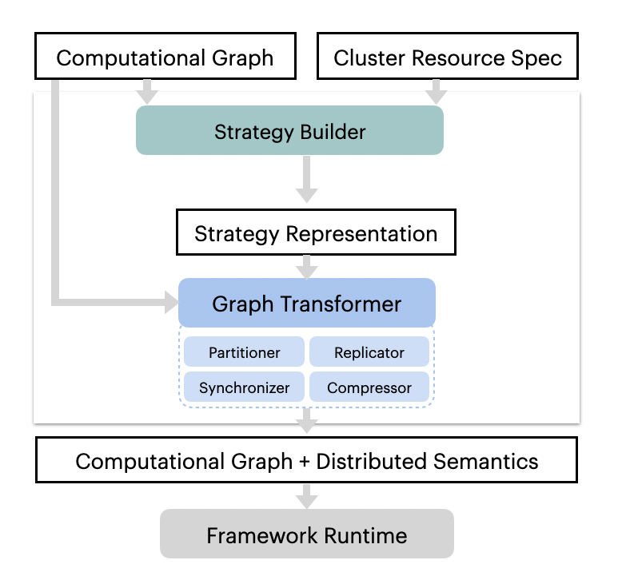

Architecture¶
We recommend that you read AutoDist’s Rationale before reading this doc. This document broadly describes the architecture of AutoDist and also goes into some details about the implementation of various features.
Overview¶
AutoDist was designed with two goals in mind:
Have a flexible backend capable of distributing graphs according to an arbitrary
StrategyHave an incredibly easy to use interface
This means that the code is broadly separated into two parts: Strategy Generation and Graph Transformation.
General Workflow¶
{kind=link}
The general workflow of AutoDist is described in the image.
Users provide a TensorFlow Graph (tf.Graph)
and a resource specification (ResourceSpec).
From this, a StrategyBuilder analyzes both the tf.Graph and the ResourceSpec and generates a Strategy,
a Protobuf representation of how to distribute the graph.
This Strategy is then passed to the GraphTransformer, the “backend” of AutoDist that is responsible
for distributing the user’s graph according to the given strategy. This GraphTransformer will alter the
original tf.Graph on a per-variable basis, adding the necessary TensorFlow
operations (ops)
as defined in the Strategy.
After the transformed graph has been built, it is sent back to TensorFlow for execution.
Some things to note:
Currently, the strategy generation happens on one node. This strategy is then sent out to every node, and graph transformation happens on every node (it is much easier to send a small strategy file over the network than it is to send an entire transformed graph).
When given multiple nodes with multiple devices (e.g. GPUs) each, we do in-graph replication within each worker and between-graph between workers. That means that each worker will have one
tf.Graphthat contains the replicated graph for each GPU on that worker, but will not contain graphs for devices outside that worker.Currently, AutoDist only supports data-parallel distribution; that is, distribution along the batch dimension. There are plans to support model parallelism by providing the ability to partition ops, but that has not been implemented yet.
StrategyBuilders¶
Each StrategyBuilder describes a method for synchronizing each trainable
variable in the graph. There are a few different StrategyBuilders listed
here, with each doing different things.
For more details, you could refer to “Choose Strategy Builders” or
“Customize Strategy Builders””
Essentially, Strategy Builders are just choosing a sample from the strategy space defined by the Strategy
protobuf. Theoretically, every possible strategy representable in a Strategy object should be able to be
distributed, with just a few limitations: we currently cannot partition variables that are part of a control flow,
and all-reduce does not work if there is only one machine with one GPU.
GraphTransformer¶
The GraphTransformer currently has 3 phases:
Variable Partitioning,
Op Replication,
and Synchronization
The Partitioner shards each variable (according to the Strategy) along the first dimension into equisized
partitions. The Replicator does in-graph replication of the graph, duplicating it according to the
number of devices in that worker (e.g., a worker with 2 GPUs will have two identical subgraphs,
AutoDist-Replica-1/... and AutoDist-Replica-2/...). Lastly, the synchronizers handle adding the ops for
both in-graph and between-graph synchronization, again, according to the strategy.
For more information, please refer to Graph Transformation Kernels
Networking¶
The networking side of this is generally handled by the Cluster and Coordinator objects. They are
responsible for setting up SSH connections from the chief to each worker, copying any necessary files, and starting
a tf.Server on each worker so they are ready to run the distributed graph.